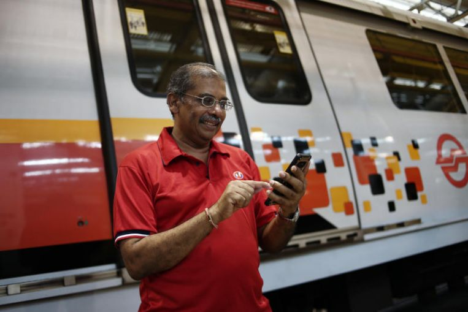

S Krishnasamy, 62, SMRT
Digital skills are necessary as SMRT continues its digital transformation to improve commuters' experience, the company said on Tuesday (Aug 6).
In the current Covid-19 pandemic, Mr Krishnasamy Suriyakhanu, 60, a senior station manager at SMRT, feels that digital skills have gained greater relevance than ever before. He added that learnt how to use mobile apps to submit medical claims and check his payslip during the pilot class of the programme. He also learnt to fill out checklists for his inspections using a phone app instead of carrying physical documents around.
Enjoying reading computer related books during his spare time, he continues to urge senior workers to take towards learning technology as a means of coping with the uncertainties brought about by the pandemic.
Wish to tell us about someone you know? Click here!